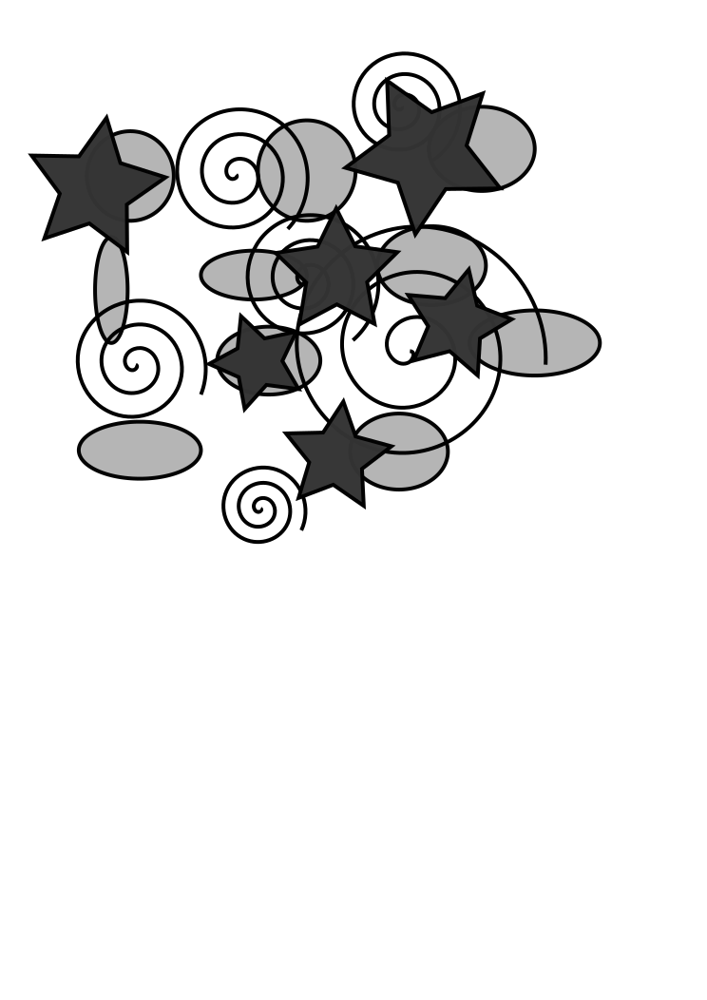
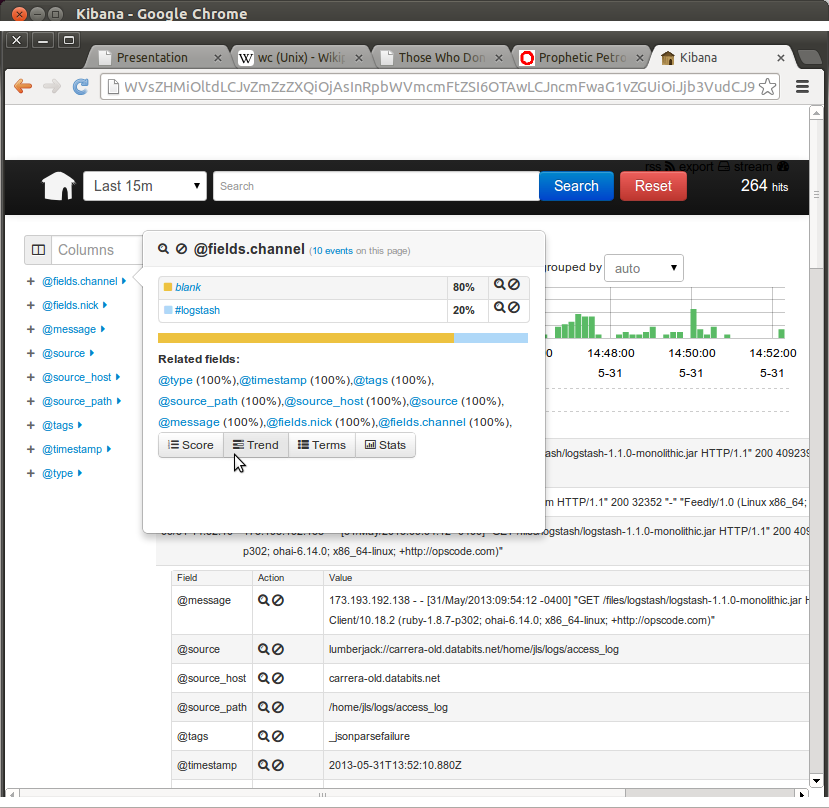

Modern logging
Dave Lambley
We try to design simple things
But when they're running ...

We have a problem
There are tools which help
-
Unix pipes — 1964
Chains processes
-
grep — 1973
Filters data
-
wc
Summarises totals
-
rrdtool — 1999
Plots graphs
Splunk

The stack
-
logstash / Message::Passing
http://logstash.net/
Message::Passing on CPAN
-
RabbitMQ
-
ZeroMQ
-
ElasticSearch
-
Kibana
-
… and other tools like metricsd, graphite, etc.